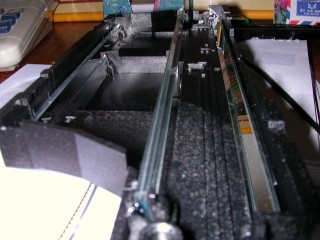

Scanner Camera!
I’m one of those people that could be variously described as ingenious or cheap. So when I stumbled across a webpage that detailed an attempt at making a digital camera from a scanner, I was hooked. After a few months of talking about it, I finally decided to give it a go. This page is the story of those efforts.
Getting the Scanner
The Scanner
[April 6, 2004]
Being cheap (yes it’s true), I looked around for the cheapest scanner I could get my hands on - in other words, a free one. But free scanners are hard to come by, so I had to resort to buying one. Looking around one day, I found a Mustek Bearpaw 1200TA (with the cute bear’s paw buttons on the front) going for 2,199 baht at Tesco Lotus. But there was one rather second-hand-looking one, so I took it to the counter and discovered it was priced at 1,049 baht, with a 7-day return period. Cool! So of course I bought it, brought it home, and tried it out immediately.
The first obstacle I encountered was getting the scanner to work with my computer. With Windows this might have been fine, but my box is a Linux box and I hadn’t previously used a scanner with it, so I didn’t know how Linux scanning works. <Insert long story about the driver chase here.> After messing things up a few times, I need to mention here (for my own benefit) to add "afe" to the backend’s config file and add SANE_DEBUG_GT68XX=4 to the environment.
It worked, sort-of … the fluorsecent tube wasn’t lighting up and the stepper motor that drives the scanning head made a terrible grinding sound when I tried to scan so I couldn’t get a picture out of it. (I began to wonder about the ethics of the original buyer.) Was this a big mistake after all?
Voiding the warranty. What fun!
Checking Out the Innards
I did want to have some fallback if it turned out the scanner didn’t work at all, but there was an annoying warranty sticker that I didn’t want to harm. Being unable to peel it off cleanly, I decided to cut it cleanly and hope nobody would notice if I tried to return it.
The main PCB. This board was mounted on the scanner housing.
The internals of the scanner are surprisingly simple, thanks to VLSI technology. There’s the front button panel, a toothed belt driven by a stepper motor (that works through a few gears) that drives the CCD assembly, and a small board containing a few miscellaneous components plus a Grand Tech 6816 chip, which turns out to be the brains of the thing. (I know thanks to the experience finding a driver, which turned out to be the GT68xx.)

Mirror assembly with side removed
The CCD assembly has a neato mirror setup that allows the thing you’re scanning to be optically 20cm away from the lens. If you look into an ordinary scanner (ie not a Canon LIDE), you’ll see the fluorescent tube and an opening next to it. Inside the opening are four mirrors that reflect the light horizontally a couple of times, until it enters the lens.
And here’s where the lens is. (Looking into the lens bottom-left)
The lens itself is quite small and has a focal length of a few centimetres. Behind the lens is a PCB with a CCD chip and a few other bits on it.
Fortunately for me, the stepper motor isn’t exactly broken, but it’s so weak that it sometimes has trouble getting started. Just for fun, I tried scanning with the cover off, shining a torch into the scanning slot. You can predict the results… However I did learn that it works best with the calibration off. I shouldn’t be surprised, as I no longer have a nice calibrated light source to perform the calibration.
Fooling the scanner: A piece of paper permanently blocks the optical detector
The CCD board also has a little photodetector to tell the scanner when it’s reached the end of the flatbed. You can see a little notch for it in the middle of the picture, near the top. The scanner only checks this detector when it’s travelling back to the starting position, so it can know when it’s arrived there. This is a big plus for me, because my CCD will soon not be travelling anywhere. It will be liberated from the mirror assembly completely, so taping a small piece of paper over the detector makes scanning much faster. As soon as it starts “moving”, it has arrived!
The CCD chip that actually does the scanning. The insert shows the three colours on the chip.
The CCD itself was a small surprise to me because I’ve never seen one before. Of course, I was expecting it to be a line. The whole thing is about 4cm long. The colour filters were not apparent to the naked eye — I only saw them after I looked at the pictures :-).
First Image: The first photograph from my scanner. It’s me! (Man I’m good-looking)
First Scans
When it was daylight I tried putting a lens over the CCD, at about the focal length (to focus at infinity). Actually, the distance was determined by the size of the cardboard square I happened to have. I did a scan and moved my face past the lens, and presto! a beautiful rendition of me!
This image obviously leaves a lot to be desired. One easily visible problem is the overall red cast in the picture. I’m not sure if this is due to infra-red light swamping the CCD, or if it’s a white-balance problem. This needs some investigation. The focus is also quite abysmal, and it might help if I moved my head past the scanner at just the right speed.
I did a lot more playing around, trying to rotate the CCD + shield + lens assembly while the thing was “scanning”, with some positive results. The ambient indoor light was sufficient for a scan. Scanning outdoors just blew it away and everything came out white.
My first nature photo with the scanner camera
I tried putting a piece of paper with a hole punched in it behind the lens as an aperture, which improved matters. Finally, I added another paper with a smaller hole in front, and scanned out the door.
At this point I need to improve my lens and rotation technologies. I actually plan to use my old Minolta 7000 film camera and lens, placing the CCD across the film rails. (I’m going fully digital for my photography anyway). And I still need that old stepper motor and belt, to attempt to drive the head of a tripod at the correct speed.
Here’s a picture of the “camera” to date.
Scanner camera to date
Improving the Optics
[Late 2004]

The lens mounted on bellows
Months later, I’m back on the trail. The entire device was far too fragile for and serious use, so I set about improving things. First, I wanted to mount the CCD behind a nice lens, but how? I was now back “home” in Australia and had a few more resources available — the relevant ones turned out to be some old jiffy boxes, an old 28mm lens, and a bellows of the type used for photomacrography.
The lens had lost its mounting ring long since. I was told that it had once been dropped from a height and saved by a quick kick from below, but now… basically useless. I used some imagination to mount it to the lens-end of the bellows.
Getting the CCD mounted was rather more difficult. I first had to construct a circle out of jiffy-box plastic to mount in the bellows as designed, and then cut a slot out of it for the CCD. It also turned out that the PCB was really too long to physically mount on the bellows — something had to give.
The only thing on the far end of the PCB (away from the connector) was the optical end-sensing switch and a connector to the fluorescent tube that lights the scanned subject. I wondered if I could kill two birds with one stone by tricking the scanner electrically to believe that it was at the end of the scan bed. Tracing the tracks leading to the detector, I found the return signal wire and measured the voltage that appeared on it when the detector was open and blocked. Then, a simple voltage divider “fixed” the problem.
Now that I had the bodginess and lens problems fixed, it was time to do some scanning.
I mounted the “camera” on a tripod and scanned. I’ve done a lot of these scans and had all sorts of problems getting nice images out of the thing. To do it properly, of course, I’d need a motor drive on the tripod. But the light outside was just too contrasty, the colour-balance too difficult, and the entire setup just too darn finicky to really work well. After a while I did manage to get a reasonable image out the window though.
Scan of my backyard
At this point I became quite fed up with the entire thing. My original plan had been to take panoramic photos of any width, but I could see it wasn’t going to be practical. Apart from the pathetic colour and exposure, it would be quite impractical to take my contraption anywhere. I’ve decided to use my new digital camera to make panoramic photos in future.